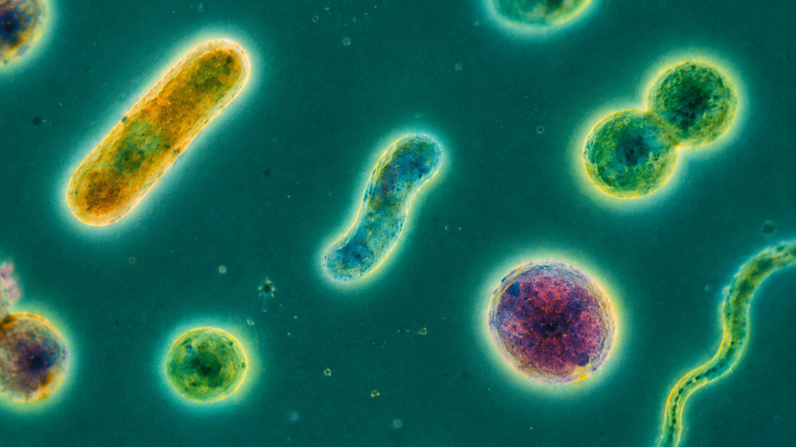
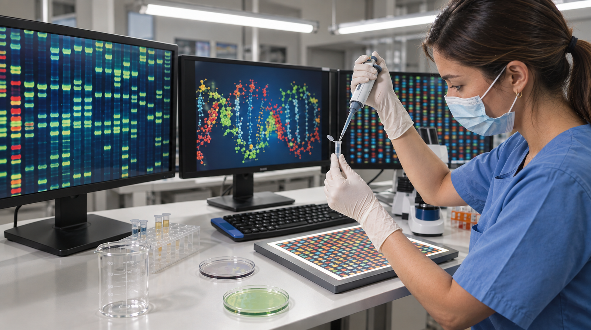
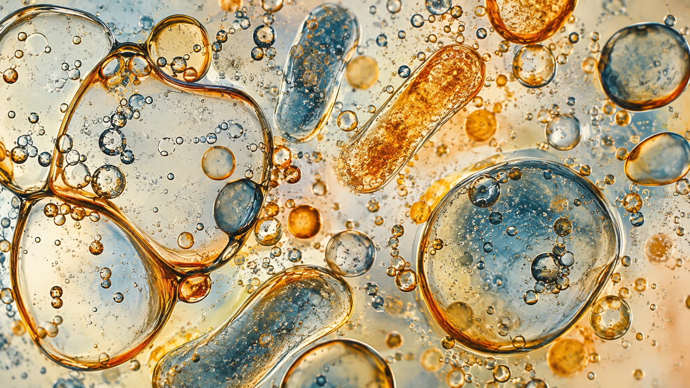

Meta-barcoding
Clasificación taxonómica y predicción funcional de comunidades microbianas a partir de secuencias amplificadas de 16S/ITS con QIIME2 y PICRUSt2.
Bioinformática meta-ómica
Análisis bioinformático de microbiota, muestras ambientales y datos ómicos para grupos de investigación y empresas.

Servicios
Cada análisis se adapta al diseño experimental del proyecto.
Clasificación taxonómica y predicción funcional de comunidades microbianas a partir de secuencias amplificadas de 16S/ITS con QIIME2 y PICRUSt2.
Identificación taxonómica mediante alineamiento con bases de datos personalizadas utilizando Kraken2 y Bracken.
Perfilado de rutas metabólicas mediante alineamiento funcional y enriquecimiento, útil para caracterizar el potencial funcional de microbiotas complejas.
Procesamiento de datos genómicos y transcriptómicos, con herramientas adaptadas a distintos diseños experimentales.
Resultados
Pulsa en cualquier figura para verla a tamaño completo.

Sobre BiotaScope
BiotaScope es un servicio especializado en análisis bioinformático meta-ómico. Trabajamos con grupos de investigación y empresas que necesitan convertir datos de secuenciación en resultados interpretables.
Contacto
Descríbenos el proyecto en un par de frases y te respondemos con una primera valoración.

O escríbenos a angel@biotascope.com